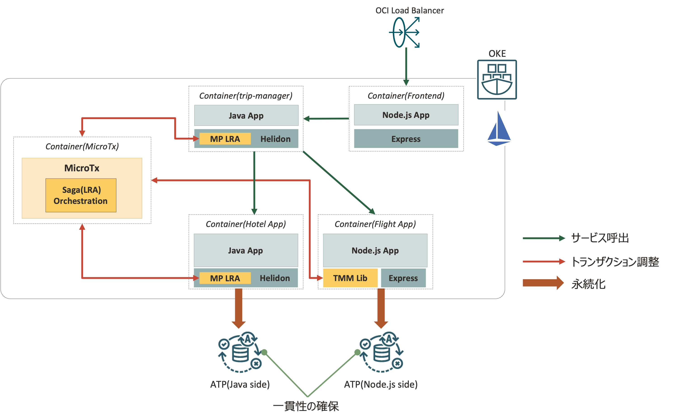
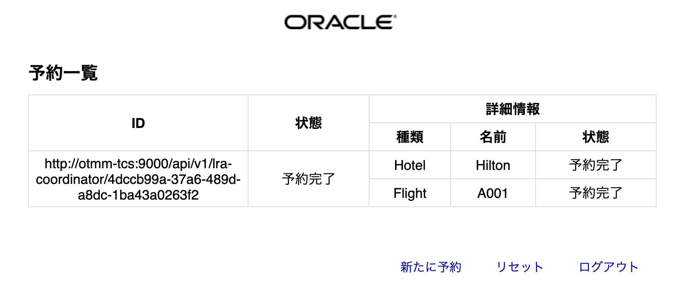

このチュートリアルでは、別々のデータベースを持つ2つのサンプルアプリケーション間の分散トランザンクションについて、Oracle Transaction Manager for Microservices(MicroTx)を利用しながら一貫性を確保する体験をしていただく内容になっています。
このチュートリアルには以下のサービスが含まれます。
-
- Oracle Container Engine for Kubernetes（略称：OKE）:
- マネージドなKuberentesクラスタを提供するクラウドサービスです。
-
- Oracle Transaction Manager for Microservices（略称：MicroTx）:
- Oracleが提供する分散トランザクションマネージャです。
-
- Oracle Autonomous Transaction Processing（略称：ATP）:
- 運用がすべて自動化された自律型データベースサービスです。
MicroTxについて
MicroTxは現在Free版での提供となり、商用環境ではご利用頂けません。(評価/検証目的でのご利用となります)
今回のハンズオンもFree版のMicroTxを利用します。
商用環境でご利用いただけるMicroTxは後日リリース予定です。
前提条件
チュートリアルを開始する前に以下を準備してください。
-
OKEハンズオン事前準備を実施済みであること
Oracle Cloud Infrastructureの基本操作はチュートリアル : OCIコンソールにアクセスして基本を理解するをご確認ください。
ゴールを確認する
はじめに、手順を最後まで実施したときにどのような環境が作られるか確認して、ゴールの全体像を掴んでおきましょう。
手順を最後まで行うと、下図のような環境が構成されます。

| 構成要素 | 説明 |
|---|---|
| OKE | アプリケーションのコンテナが稼働するクラスター本体です。OKEをプロビジョニングすると、Oracle Cloudの各種IaaS上に自動的に構成されます。 |
| ATP | 今回デプロイするサンプルアプリケーションが利用するデータベースです。今回は2つのアプリケーションそれぞれに1つずつATPを持ちます。 |
| MicroTx | 2つのアプリケーション間のトランザクション一貫性を確保するための分散トランザクションマネージャです。 |
この環境を構築後にサンプルアプリケーションを利用して、MicroTxを利用したトランザクション制御を体験して頂きます。
0.事前準備
ここでは、後続の手順で利用するトークンやリソースの準備を行います。
準備する項目は以下の7つです。
| 項目 | 説明 |
|---|---|
| クライアントID | MicroTxが利用する認証情報を作成し、通信を保護するためのIdentity Provider(このチュートリアルではIdentity Cloud Serviceを利用)アプリケーションのクライアントID |
| クライアントシークレット | MicroTxが利用する認証情報を作成し、通信を保護するためのIdentity Provider(このチュートリアルではIdentity Cloud Serviceを利用)アプリケーションのクライアント・シークレット |
| jwks_uri | アプリケーションが利用するトークン(JWT)を検証するための公開鍵の情報を含んだエンドポイント |
| ユーザ名 | OCIのリソース操作に必要なユーザ名です。今回は、OCIRへのアクセスに利用します。 |
| 認証トークン | OCIのリソース操作に必要なトークンです。今回は、OCIRへのアクセスに利用します。 |
| オブジェクト・ストレージ・ネームスペース | OCIRへのアクセスに必要な情報です。 |
| コンパートメントOCID | ATPをプロビジョニングする際に利用する情報です。 |
手順0-1について
手順0-1はIdentity Cloud Serviceアカウントでの手順となっております。
新しく環境を作成された方はIdentity Domainに移行しており、この場合の手順は別途ご案内します。
0-1. Identity Cloud Serviceの機密アプリケーション作成
ここでは、MicroTxが通信を保護するために利用するIdentity Cloud Serviceアプリケーションを作成し、以下の項目を取得します。
| 項目 | 説明 |
|---|---|
| クライアントID | MicroTxが利用する認証情報を作成し、通信を保護するためのIdentity Provider(このチュートリアルではIdentity Cloud Serviceを利用)アプリケーションのクライアントID |
| クライアントシークレット | MicroTxが利用する認証情報を作成し、通信を保護するためのIdentity Provider(このチュートリアルではIdentity Cloud Serviceを利用)アプリケーションのクライアント・シークレット |
まず、OCIコンソールにログインします。
右上にある人型マークをクリックして、サービス・ユーザー・コンソールをクリックします。

遷移後に言語設定画面が表示された場合は、以下のように選択し、OKをクリックします。
| key | value |
|---|---|
| Languages | 日本語 |
| Timezone | Japan |
表示された画面からOracle Identity Cloud Serviceの管理コンソールをクリックします。

管理コーンソールに遷移したら、左上のハンバーガーメニューをクリックし、Applicationsをクリックします。

左上にあるAddをクリックします。
Confidential Applicationを選択します。
Confidential Application(機密アプリケーション)について
Identity Cloud Serviceでは、Confidential Application(機密アプリケーション)を利用することでOAuth 2.0を利用したアプリケーションを構築することができます。
今回はMictroTxがこのConfidential Application(機密アプリケーション)の設定を利用します。
Configure this application as a client nowを選択し、以下のように入力し、Nextをクリックします。
| key | value | 説明 |
|---|---|---|
| Name | otmm-app |
今回利用するConfidential Application(機密アプリケーション)名 |

Allowed Grant Typeを以下のように入力し、Nextをクリックします。
| key | value | 説明 |
|---|---|---|
| Allowed Grant Type | Resource Owner/Client Credencials/JWT Assertion/Refresh Token |
許可する認可タイプ |

以降はNextを選択していきます。

Finishをクリックします。
Client IDとClient Secretが表示されるので、メモ帳などに控えておいてください。
その後、Closeをクリックします。

クリックしたら、右上にあるActivateをクリックします。
確認画面でOKをクリックします。

Activateされると以下の画面が表示されます。
最後に、左上のハンバーガーメニューをクリックし、Settings=>Default Settingsをクリックします。

Access Signing Certificateのチェックを入れ、Saveをクリックします。

これで、Identity Cloud Serviceの機密アプリケーション作成は完了です。
0-2. jwks_urlの確認
ここでは、MicroTxに設定する以下の項目を確認します。
| 項目 | 説明 |
|---|---|
| jwks_uri | アプリケーションが利用するトークン(JWT)を検証するための公開鍵の情報を含んだエンドポイント |
Identity Cloud Serviceのディスカバリーエンドポイントは以下の形式になっています。
https://<tenant-base-url>/.well-known/openid-configuration
<tenant-base-url>の部分は、Identity Cloud Serviceの機密アプリケーション作成でIdentity Cloud Serviceの管理コンソールにアクセスした際のURLに含まれています。
例えば、管理コンソールのURLが以下の場合、
https://idcs-xxxxxxxxxxxxxxxxxxxxxxxxxx.identity.oraclecloud.com/ui/v1/adminconsole
idcs-xxxxxxxxxxxxxxxxxxxxxxxxxx.identity.oraclecloud.comの部分が<tenant-base-url>となるので、ディスカバリーエンドポイントのURLは
https://idcs-xxxxxxxxxxxxxxxxxxxxxxxxxx.identity.oraclecloud.com/.well-known/openid-configuration
となります。
このURLにブラウザからアクセスし、以下のような画面が表示されればOKです。
表示された情報の中で、jwks_uriと書かれている行をメモしておきます。
このURLは後ほど利用するので、メモ帳などに控えておいてください。
0-3. その他必要アイテムの取得
ここでは、以下の項目を取得します。
| 項目 | 説明 |
|---|---|
| ユーザ名 | OCIのリソース操作に必要なユーザ名です。今回は、OCIRへのアクセスに利用します。 |
| 認証トークン | OCIのリソース操作に必要なトークンです。今回は、OCIRへのアクセスに利用します。 |
| オブジェクト・ストレージ・ネームスペース | OCIRへのアクセスに必要な情報です。 |
| コンパートメントOCID | ATPをプロビジョニングする際に利用する情報です。 |
0-3-1. ユーザ名の確認
ここでは、ユーザ名の確認を行います。
OCIコンソール画面右上の人型のアイコンをクリックし、展開したプロファイルに表示されているユーザ名をエディタなどに記録しておきます。
これでユーザ名の確認は完了です。
0-3-2. 認証トークンの作成
ここでは、OCIRへのアクセスに必要な認証トークンを取得します。
OCIコンソール画面右上の人型のアイコンをクリックし、展開したプロファイルからユーザ名をクリックします。
下にスクロールして「リソース」の「認証トークン」に移動し、「トークンの生成」ボタンをクリックします。

 をクリックします。
をクリックします。
以下の項目を入力します。
| key | value |
|---|---|
| 説明 | microtx handson |
をクリックします。
表示されたトークンをコピーして、エディタなどに記録しておきます。
受講者の方へ
生成されたトークンは一回のみ表示されます。
「コピー」をクリックしてトークンがコピーされ、どこに保存してください。完了したら、「閉じる」ボタンをクリックします。（注：忘れたときは作成されたトークンを削除して、再度生成してください。）
0-3-3. テナンシ名とオブジェクト・ストレージ・ネームスペースの確認
ここでは、OCIコードレポジトリへのアクセスおよびOCIRへコンテナイメージをプッシュする際に必要となるテナンシ名とオブジェクト・ストレージ・ネームスペースを確認します。
OCIコンソール画面右上の人型のアイコンをクリックし、テナンシ名をクリックします。

2つの赤枠部分の値をコピーして、エディタなどに保存しておきます。
上の赤枠がテナンシ名(名前)、下の赤枠がオブジェクト・ストレージ・ネームスペース(オブジェクト・ストレージ・ネームスペース)になります。

以上で、テナンシ名とオブジェクト・ストレージ・ネームスペースの確認は完了です。
0-3-4. コンパートメントOCIDの確認
ここでは、ATPをプロビジョニングする際に利用するコンパートメントOCIDの確認を行います。
OCIコンソールのハンバーガメニューより、「アイデンティティとセキュリティ」メニューの「コンパートメント」をクリックします。
ご自身のコンパートメントが表示されているので、クリックします。
ハンズオンに利用するコンパートメントついて
トライアル環境でのハンズオンの場合は、ルートコンパートメントを利用します。(コンパートメントの語尾に(ルート)と付与されています)
それ以外の環境でご自身に割り当てられているコンパートメントがある場合は、そちらのコンパートメントをご確認ください。
「コンパートメント情報」内にある赤枠部分の値をコピーして、エディタなどに保存しておきます。
以上で、コンパートメントOCIDの確認は完了です。
0-3-5. サンプルアプリケーションレポジトリのクローン
ここでは、今回のハンズオンで利用するサンプルアプリケーションが格納されているレポジトリをクローンします。
Cloud Shellを起動します。
以下のコマンドを実行します。
git clone https://github.com/oracle-japan/microtx-handson.git
これでサンプルアプリケーションのクローンは完了です。
以上で、事前準備は完了です。
1.MicroTxのデプロイ
ここでは、OKE上にMicroTxのデプロイを行っていきます。
MicroTxのデプロイは以下の流れで実施します。
3についてはMicroTxに付属しているスクリプトを利用して実施します。
以下の流れで実施します。
- 動的グループの設定
- OKEクラスタの作成
- MicroTxバイナリのダウンロード
- MicroTxのhelm chartの編集
- istioctlのインストール
- MicroTxのデプロイ
1-1. 動的グループとポリシーの設定
ここでは、このハンズオンに必要な動的グループとポリシーを作成します。
ポリシーについて
Oracle Cloud Infrastrctureにはポリシーという考え方があります。
ポリシーを利用すると、ユーザや動的グループがどのリソースやサービスでどのような操作を実行可能にするかを制御することができます。
ポリシーの詳細はこちらのページをご確認ください。
今回は、ポリシーの作成(動的グループを含む)をシェルスクリプトで簡略化していますが、以下の動的グループとポリシーが設定されます。
| 動的グループ | ルール | 説明 |
|---|---|---|
| OCI_MicroTx_Dynamic_Group | instance.compartment.id = ‘コンパートメントOCID’,resource.compartment.id = ‘コンパートメントOCID’ | コンパートメント内の全てのリソースやインスタンスを含めた動的グループ |
コンパートメントについて
Oracle Cloud Infrastrctureにはコンパートメントという考え方があります。
コンパートメントは、クラウド・リソース(インスタンス、仮想クラウド・ネットワーク、ブロック・ボリュームなど)を分類整理する論理的な区画で、この単位でアクセス制御を行うことができます。また、OCIコンソール上に表示されるリソースのフィルタとしても機能します。
コンパートメントの詳細はこちらのページをご確認ください。
動的グループについて
Oracle Cloud Infrastrctureには動的グループという考え方があります。
これを利用すると、ユーザではなく、OCI上のリソースやインスタンスを主体とした操作を実現できます。
動的グループの詳細はこちらのページをご確認ください。
本ハンズオンでの動的グループについて
今回は、簡易的にハンズオンを実施するために、コンパートメント内の全てのリソースやインスタンスを動的グループとして含める設定を行なっています。
本来は、各サービスのタイプを指定して動的グループを作成することになります。
| ポリシー | 説明 |
|---|---|
| Allow dynamic-group OCI_MicroTx_Dynamic_Group to manage autonomous-database in compartment id ‘コンパートメントOCID’ | 後続の手順で登場するOCI Service Operator for Kubernetes(OSOK)がAutonomous Transaction Processingを管理可能とするポリシー |
それでは、上記の動的グループとポリシー設定するためのシェルスクリプトを実行します。
ポリシーについて
ここで利用するスクリプトは、トライアル環境向けに作成しており、テナンシ管理者権限を持つことを前提にしております。
社内環境などでチュートリアルを実施されている方は、手動で動的グループの作成およびご自身に割り当てられているコンパートメントに対してポリシーを設定してください。
なお、動的グループを作成するには権限が必要となりますので、Authorization failedというメッセージが表示される場合は、テナンシ管理者にご連絡ください。
シェルスクリプトは0-1.ハンズオン資材の取得で取得した資材内にあります。
cd microtx-handson
cd prepare
chmod +x prepare.sh
./prepare.sh
以下のように出力されれば問題ありません。
ocid1.tenancy.oc1..aaxxxxxxxxxxxxxxxxxxxxxxxxxxxxxxxx55asqdzge45nq
{
"data": {
"compartment-id": "ocid1.tenancy.oc1..aaxxxxxxxxxxxxxxxxxxxxxxxxxxxxxxxx55asqdzge45nq",
"defined-tags": {
"Oracle-Tags": {
"CreatedBy": "oracleidentitycloudservice/xxxxxx.xxxxxx@gmail.com",
"CreatedOn": "2022-01-31T01:35:54.465Z"
}
},
"description": "OCI_MicroTx_Dynamic_Group",
"freeform-tags": {},
"id": "ocid1.dynamicgroup.oc1..aaxxxxxxxxxxxxxxxxxxxxxxxxxxxxxxxx55asqdzge45nq",
"inactive-status": null,
"lifecycle-state": "ACTIVE",
"matching-rule": "any {resource.compartment.id = 'ocid1.tenancy.oc1..aaxxxxxxxxxxxxxxxxxxxxxxxxxxxxxxxx55asqdzge45nq',instance.compartment.id = 'ocid1.tenancy.oc1..aaxxxxxxxxxxxxxxxxxxxxxxxxxxxxxxxx55asqdzge45nq'}",
"name": "OCI_MicroTx_Dynamic_Group",
"time-created": "2022-01-31T01:35:54.528000+00:00"
},
"etag": "66c9058cf8f1145ce9047130c4a266d816e9dfbf"
}
{
"data": {
"compartment-id": "ocid1.tenancy.oc1..aaxxxxxxxxxxxxxxxxxxxxxxxxxxxxxxxx55asqdzge45nq",
"defined-tags": {
"Oracle-Tags": {
"CreatedBy": "oracleidentitycloudservice/xxxx.xxxx@gmail.com",
"CreatedOn": "2022-01-31T01:35:57.108Z"
}
},
"description": "OCI_MicroTx_Dynamic_Group_Policy",
"freeform-tags": {},
"id": "ocid1.policy.oc1..aaxxxxxxxxxxxxxxxxxxxxxxxxxxxxxxxx55asqdzge45nq",
"inactive-status": null,
"lifecycle-state": "ACTIVE",
"name": "OCI_MicroTx_Dynamic_Group_Policy",
"statements": [
"Allow dynamic-group OCI_MicroTx_Dynamic_Group to manage autonomous-database in compartment id ocid1.tenancy.oc1..aaxxxxxxxxxxxxxxxxxxxxxxxxxxxxxxxx55asqdzge45nq",
],
"time-created": "2022-01-31T01:35:57.220000+00:00",
"version-date": null
},
"etag": "e0fb30d026d2a4f091058c2f686d51996ea59f8c"
}
これでポリシー作成は完了です。
ホームディレクトリに戻っておきます。
cd ~
1-2. OKEクラスタの作成
ここでは、このハンズオンで利用するOKEクラスタを作成します。
前提条件で記載したOKEハンズオン事前準備で構築したOKEクラスタから少し環境の変更が必要なので、新規にクラスタを構築します。
左上のハンバーガーメニューから開発者メニュー=>Kubernetesクラスタ(OKE)をクリックします。
右上にある をクリックします。
をクリックします。
カスタム作成をクリックします。
以下を入力し、をクリックします。
| key | value |
|---|---|
| 名前 | “microtx-free” |

それぞれ以下の項目を入力後、APIエンドポイントへのパブリックIPアドレスの割当てにチェックを入れて、をクリックします。
| key | value |
|---|---|
| xxxx(コンパートメント名)のVCN | OKEハンズオン事前準備のクイック作成時に作成されたVCN名(oke-vcn-quick-cluster1-xxxxxxという形式の名前) |
| xxxx(コンパートメント名)のKubernetesサービスLBサブネット | OKEハンズオン事前準備のクイック作成時に作成されたKubernetesサービスLBサブネット(oke-svclbsubnet-subnet-quick-cluster1-xxxxxxという形式の名前) |
| xxxx(コンパートメント名)のKubernetes APIエンドポイント・サブネット | OKEハンズオン事前準備のクイック作成時に作成されたKubernetes APIエンドポイント・サブネット(oke-k8sApiEndpoint-subnet-quick-cluster1-xxxxxxという形式の名前) |

以下の項目を入力し、イメージの変更をクリックします。
| key | value |
|---|---|
| OCPU数 | 2 |
| メモリ量(GB) | 8 |
画像の赤枠のイメージ(Oracle Linux 7.9 Kubernetesバージョン 1.24.1)のイメージを選択し、イメージの選択をクリックします。
以下の項目を入力します。
| key | value |
|---|---|
| ノード数 | 3 |
以下の項目を入力し、それ以外の項目は任意の値を入力してください。(選択式になっています)
| key | value |
|---|---|
| xxxxxのワーカー・ノード・サブネット | OKEハンズオン事前準備のクイック作成時に作成されたワーカー・ノード・サブネット(oke-nodesubnet-quick-cluster1-xxxxxxという形式の名前) |
ネットワーク・タイプはFlannelオーバレイを選択し、をクリックします。
クラスタの作成をクリックします。

閉じるをクリックします。

これでクラスタ作成は完了です。
クラスタがアクティブになった後、クラスタのアクセス設定を行ってください。
手順については、OKEハンズオン事前準備のkubectlセットアップを参考に実施してください。
1-3. MicroTxバイナリのダウンロード
ここでは、OCIRにMicroTxのイメージをプッシュしていきます。 MicroTxのイメージをプッシュはスクリプトを利用して実施します。
まずはMicroTxのダウンロードを行います。
こちらのURLにブラウザからアクセスします。
Oracle TMM Freeのダウンロード(画像の赤枠部分)をクリックします。

Download(画像の赤枠部分)をクリックします。
Oracleアカウントにログインしていない場合は、ログイン画面が表示されるので、ユーザ名とパスワードを入力し、サインインをクリックします。
Download(画像の赤枠部分)をクリックします。

Oracle Download Managerがローカルにダウンロードされるので、ダウンロードが完了したら実行します。
実行すると、MicroTxのダウンロード場所が選択できるので、任意の場所を選択し、Nextをクリックします。

ダウンロードが開始します。
ダウンロードが完了したら、Cloud Shellにアップロードします。
Cloud Shellの右端にある歯車マークをクリックし、アップロードをクリックします。

上記で指定したローカルのダウンロード先からzipファイルを選択します。
アップロードにはしばらく時間がかかるので、完了するまで待機します。
アップロードが完了したら、ホームディレクトリにあるファイルを確認します。
cd ~
ls V1032856-01.zip
ファイルを確認したら、解凍します。 解凍に少し時間がかかる場合があります。
unzip V1032856-01.zip
解凍するとotmm-22.3.2というディレクトリが出力されます。
ls otmm-22.3.2
これで、MicroTxバイナリのダウンロードが完了です。
1-4. サンプルアプリケーションのコンテナイメージビルド
ここでは、アプリケーションのコンテナイメージのビルドを行います。
今回は、ライセンスの関係上、Flightアプリケーションをユーザの皆様でビルドして頂く必要があるため、この手順を追加しています。
Flightアプリケーションには、Oracle Instant ClientおよびMicroTxのNode.js用ライブラリが含まれており、ライセンスの関係上、ユーザの皆様でビルドする必要があるためにこの手順を実施します。
今回利用するサンプルアプリケーションのうち、Flightアプリケーション以外については既にビルド済みのイメージを公開しておりますので、そちらを利用します。
1-3. MicroTxバイナリのダウンロードでダウンロードした資材からNode.js用のMicroTxライブラリをFlightにコピーします。
cp -pr otmm-22.3.2/lib/nodejs/tmmlib-node-22.3.2.tgz microtx-handson/flight/
ディレクトリを移動します。
cd microtx-handson/flight/
プッシュ先のOCIRにログインします。
docker login <ご自身が利用されているリージョンのリージョン・コード>.ocir.io
<ご自身が利用されているリージョンのリージョン・コード>はご自身が利用されているリージョンに応じて変わりますので、以下の表を参考に設定してください。
| リージョン | リージョンコード |
|---|---|
| ap-tokyo-1 | nrt |
| ap-osaka-1 | kix |
| ap-melbourne-1 | mel |
| us-ashburn-1 | iad |
| us-phoenix-1 | phx |
| ap-mumbai-1 | bom |
| ap-seoul-1 | icn |
| ap-sydney-1 | syd |
| ca-toronto-1 | yyz |
| ca-montreal-1 | yul |
| eu-frankfurt-1 | fra |
| eu-zurich-1 | zrh |
| sa-saopaulo-1 | gru |
| sa-vinhedo-1 | vcp |
| uk-london-1 | lhr |
| sa-santiago-1 | scl |
| ap-hyderabad-1 | hyd |
| eu-amsterdam-1 | ams |
| me-jeddah-1 | jed |
| ap-chuncheon-1 | yny |
| me-dubai-1 | dxb |
| uk-cardiff-1 | cwl |
| us-sanjose-1 | sjc |
ユーザ名とパスワードを聞かれますので、以下の通り入力します。
| key | value |
|---|---|
| ユーザ名 | 0-3-3. テナンシ名とオブジェクト・ストレージ・ネームスペースの確認で確認したオブジェクトストレージネームスペースと0-3-1. ユーザ名の確認で確認したユーザ名を利用し、オブジェクトストレージネームスペース/ユーザ名 |
| パスワード | 0-3-2. 認証トークンの作成で作成した認証トークン |
コンテナイメージをビルドします。
docker image build -t <ご自身が利用されているリージョンのリージョン・コード>.ocir.io/<オブジェクト・ストレージ・ネームスペース>/tmm-handson-flight .
プッシュをします。
docker push <ご自身が利用されているリージョンのリージョン・コード>.ocir.io/<オブジェクト・ストレージ・ネームスペース>/tmm-handson-flight
プッシュしたコンテナイメージを利用するようにManifestを更新します。
Manifestはサンプルアプリケーションのk8sディレクトリにあるため、ディレクトリを移動します。
vim ../k8s/app/app.yaml
apiVersion: apps/v1
kind: Deployment
metadata:
name: flight
namespace: otmm
labels:
app: flight
version: v1
spec:
replicas: 1
selector:
matchLabels:
app: flight
version: v1
template:
metadata:
labels:
app: flight
version: v1
spec:
containers:
- name: flight
image: nrt.ocir.io/orasejapan/tmm-handson-flight # ここを変更
imagePullPolicy: Always
ports:
- containerPort: 8083
137行目にあるimageフィールドを先ほどプッシュしたOCIRのパスに更新し、保存します。
| key | value |
|---|---|
| image | <ご自身が利用されているリージョンのリージョン・コード>.ocir.io/<オブジェクト・ストレージ・ネームスペース>/tmm-handson-flight |
ディレクトリを戻しておきます。
cd ~
以上で、サンプルアプリケーションのコンテナイメージビルドは完了です。
1-5. MicroTxのhelm chartの編集
ここでは、MicroTxのインストールにあたって、必要なパラメータを設定していきます。
MicroTxはhelmを利用してインストールされるため、ここではvalues.yamlにパラメータを設定していきます。
今回はotmm-22.3.2/otmm/helmcharts/quickstart/oke/qs-oke-values.yamlを利用します。
qs-oke-values.yamlを開きます。
vim otmm-22.3.2/otmm/helmcharts/quickstart/oke/qs-oke-values.yaml
まず、65行目~72行目を書き換えます。
#Authorization settings
authorization:
enabled: "false"
#This indicates the Authorization (Access) and Refresh-Token propagation is enabled/disabled.
authTokenPropagationEnabled: "false"
identityProviderName: ""
identityProviderUrl: ""
identityProviderClientId: ""
以下の項目に書き換えます。
| key | value |
|---|---|
| enabled | “true” |
| identityProviderName | “IDCS” |
| identityProviderUrl | https://0-2. jwks_urlの確認で確認した<tenant-base-url> |
| identityProviderClientId | 0-1. Identity Cloud Serviceの機密アプリケーション作成で作成したクライアントID |
最後に85行目〜92行目を書き換えます。
# Authentication using JWT token. Provide JWT token issuer url
authentication:
requestsWithNoJWT: ALLOW # ALLOW or DENY
jwt:
# Identifies the issuer that issued the JWT: example - "http://10.20.30.10:8080/auth/realms/istio"
issuer:
# URL of the provider’s public key set to validate signature of the JWT. Example URL: "http://10.20.30.10:8080/auth/realms/istio/protocol/openid-connect/certs"
jwksUri:
以下の項目に書き換えます。
| key | value |
|---|---|
| issuer | “https://identity.oraclecloud.com/” |
| jwksUri | 0-2. jwks_urlの確認で確認したjwks_uri |
これで、MicroTxのhelm chartの編集は完了です。
1-6. istioctlのインストール
ここでは、1-7. MicroTxのデプロイで実行するスクリプトで利用するistioctlというIstioを操作するためのCLIツールをインストールしておきます。
istioctlについて
istioctlはこちらをご確認ください。
以下のコマンドを実行します。
このハンズオンでは1.16.1を利用します。
curl -L https://istio.io/downloadIstio | ISTIO_VERSION=1.16.1 sh -
PATHを通します。
export PATH="${PWD}/istio-1.16.1/bin:${PATH}"
最後に動作確認をします。
istioctl version
以下のようなメッセージが出力されればインストールは完了です。
no running Istio pods in "istio-system"
1.16.1
1-7. MicroTxのデプロイ
otmm-22.3.2ディレクトリ直下にrunme.shというスクリプトがあるので、これを実行します。
このスクリプトを実行することによって、MictoTxをインストールできます。
実行権限がない場合があるので、実行権限を付与します。
cd otmm-22.3.2/
chmod +x runme.sh
スクリプトを実行します。
./runme.sh
以下のようなメッセージが出力されるので、今回は3)を選択します。
これは環境にOKEを利用することを意味します。
*************************
Use this script to run microservices and get started with Oracle Transaction Manager for Microservices.
*************************
Enter a number (1-3) to specify the platform on which you want to run the microservice
1) Docker - only the transaction coordinator will run in a docker container and the sample microservices will run in the local environment
2) Minikube
3) Oracle Cloud Infrastructure Container Engine for Kubernetes (OKE)
#? 3
3を入力すると、初めにIstioのインストールが始まります。
Istioについて
MicroTxに必須なコンポートとしてIstioがあります。
Istioはサービスメッシュを実現するためのプラットフォームになります。サービスメッシュおよびIstioについては、詳細についてはこちらの資料をご確認ください。
以下のような出力がされれば、Istioのインストールは完了です。
#? 3
Error from server (NotFound): namespaces "istio-system" not found
✔ Istio core installed
✔ Istiod installed
✔ Ingress gateways installed
✔ Installation complete Making this installation the default for injection and validation.
Thank you for installing Istio 1.15. Please take a few minutes to tell us about your install/upgrade experience! https://forms.gle/SWHFBmwJspusK1hv6
Waiting for Istio-ingressgateway loadbancer to be provisioned. Will try again in 5 seconds.
Waiting for Istio-ingressgateway loadbancer to be provisioned. Will try again in 10 seconds.
Waiting for Istio-ingressgateway loadbancer to be provisioned. Will try again in 20 seconds.
Waiting for Istio-ingressgateway loadbancer to be provisioned. Will try again in 40 seconds.
Waiting for Istio-ingressgateway loadbancer to be provisioned. Will try again in 80 seconds.
IngressのTLS証明書作成について
スクリプトの中でTLS証明書を作成するプロセスがありますが、条件によってはパスワードを複数回聞かれる可能性があります。
その場合は、任意のパスワードを入力してください。
次にMictoTxのコンテナイメージをプッシュするレジストリを入力します。
ここではOCIRを利用します。
OCIRのレジストリは<ご自身が利用されているリージョンのリージョン・コード>.ocir.ioとなります。
例えば、東京リージョンの場合はnrt.ocir.ioになります。
<ご自身が利用されているリージョンのリージョン・コード>はご自身が利用されているリージョンに応じて変わりますので、以下の表を参考に設定してください。
| リージョン | リージョンコード |
|---|---|
| ap-tokyo-1 | nrt |
| ap-osaka-1 | kix |
| ap-melbourne-1 | mel |
| us-ashburn-1 | iad |
| us-phoenix-1 | phx |
| ap-mumbai-1 | bom |
| ap-seoul-1 | icn |
| ap-sydney-1 | syd |
| ca-toronto-1 | yyz |
| ca-montreal-1 | yul |
| eu-frankfurt-1 | fra |
| eu-zurich-1 | zrh |
| sa-saopaulo-1 | gru |
| sa-vinhedo-1 | vcp |
| uk-london-1 | lhr |
| sa-santiago-1 | scl |
| ap-hyderabad-1 | hyd |
| eu-amsterdam-1 | ams |
| me-jeddah-1 | jed |
| ap-chuncheon-1 | yny |
| me-dubai-1 | dxb |
| uk-cardiff-1 | cwl |
| us-sanjose-1 | sjc |
Istio-ingressgateway url is https://demo.tmm.dev:443
Creating a namespace 'otmm' for deployment.namespace/otmm created
Adding label 'istio-injection=enabled' to namespace 'otmm' for enabling istio envoy injection.namespace/otmm labeled
Enter docker image registry (Example: iad.ocir.io):
次にOCIRのパスを入力します。
入力値は<ご自身が利用されているリージョンのリージョン・コード>.ocir.io/<オブジェクトストレージネームスペース>となります。
<オブジェクトストレージネームスペース>は0-3-3. テナンシ名とオブジェクト・ストレージ・ネームスペースの確認で確認したオブジェクトストレージネームスペースになります。
例えば、東京リージョンの場合は、nrt.ocir.io/sampletenantとなります。
Enter docker image registry prefix for image tagging. (This is a requirement to tag and push images to the registry). Example: iad.ocir.io/oabcs1
次にOCIRのユーザ名を入力します。
ユーザ名は0-3-3. テナンシ名とオブジェクト・ストレージ・ネームスペースの確認で確認したオブジェクトストレージネームスペースと0-3-1. ユーザ名の確認で確認したユーザ名を利用し、オブジェクトストレージネームスペース/ユーザ名となります。
Creating docker secret for image pull.
Enter registry username (Example: oabcs1/<username>):
次にOCIRのパスワードを入力します。
ここでは、0-3-2. 認証トークンの作成で作成した認証トークンを入力します。
Enter registry password (Password will not appear on the screen):
この後はOCIRへのプッシュとOKEへのデプロイをスクリプト側で実施しれくれます。
以下のようにサンプルアプリケーションの実行画面が表示されれば、MicroTxのインストールは完了です。
このメッセージが出力されたら、Ctrl+Cなどでスクリプトを停止してください。
Enter a number (1-3) to specify the transaction model of the microservice that you want to run:
1) XA
2) LRA - Long Running Activities
3) TCC - Try-Confirm/Cancel
#?
2.サンプルアプリケーションのデプロイ
ここではサンプルアプリケーションのデプロイを行います。
以下の流れで実施します。
- ATPインスタンスの作成
- JaegerとKialiのインストール
- サンプルアプリケーションのデプロイ
2-1. ATPインスタンスの作成
ここでは、サンプルアプリケーションが利用するATPインスタンスを作成します。
今回のハンズオンでは、OCI Service Operator for Kubernetes(OSOK)を利用してATPのプロビジョニングを行います。
OSOKは、Kubernetes APIおよびKubernetes Operatorパターンを使用してOracle Cloud Infrastructureリソースを作成、管理および接続できるオープン・ソースのKubernetesアドオンです。
現時点で対応しているサービスは以下の通りです。(今後も続々対応サービスを追加予定です)
- Autonomous Database
- MySQL Database
- Streaming
- Service Mesh
OCI Service Operator for Kubernetes(OSOK)について
OCI Service Operator for Kubernetes(OSOK)についてはこちらおよびGitHubをご確認ください。
2-1-1. Operator SDKおよびオペレータ・ライフサイクル・マネージャ(OLM)のインストール
OSOKを利用するにはOperator SDKおよびオペレータ・ライフサイクル・マネージャ(OLM)が必要になるため、まずはそちらのインストールから行います。
Operator SDKとオペレータ・ライフサイクル・マネージャ(OLM)について
Operator SDKは、Kubernetes Operatorを効率的に開発するためのSDKになり、オペレータ・ライフサイクル・マネージャ(OLM)はOperatorのライフサイクルを管理するための仕組みになります。
Operator SDKについてはこちら、オペレータ・ライフサイクル・マネージャ(OLM)についてはこちらをご確認ください。
まずは、Operator SDKのインストールを行います。
Cloud Shellを起動します。
export ARCH=$(case $(uname -m) in x86_64) echo -n amd64 ;; aarch64) echo -n arm64 ;; *) echo -n $(uname -m) ;; esac)
export OS=$(uname | awk '{print tolower($0)}')
export OPERATOR_SDK_DL_URL=https://github.com/operator-framework/operator-sdk/releases/download/v1.12.0
curl -LO ${OPERATOR_SDK_DL_URL}/operator-sdk_${OS}_${ARCH}
ls -l
ここで、operator-sdk_linux_amd64というバイナリがダウンロードできていることを確認します。
ここからはバイナリの検証を行うためのステップを実行します。
gpg --keyserver keyserver.ubuntu.com --recv-keys 052996E2A20B5C7E
以下のように出力されます。
gpg: requesting key A20B5C7E from hkp server keyserver.ubuntu.com
gpg: /home/takuya_nii/.gnupg/trustdb.gpg: trustdb created
gpg: key A20B5C7E: public key "Operator SDK (release) <cncf-operator-sdk@cncf.io>" imported
gpg: Total number processed: 1
gpg: imported: 1 (RSA: 1)
検証に必要なファイルを取得します。
curl -LO ${OPERATOR_SDK_DL_URL}/checksums.txt
curl -LO ${OPERATOR_SDK_DL_URL}/checksums.txt.asc
ls -l
ここで、checksums.txt.ascとchecksums.txtというファイルがダウンロードできていることを確認します。
gpg -u "Operator SDK (release) <cncf-operator-sdk@cncf.io>" --verify checksums.txt.asc
以下のような結果が出力されます。
gpg: Signature made Thu 09 Sep 2021 04:59:50 PM UTC using RSA key ID BF9886DB
gpg: Good signature from "Operator SDK (release) <cncf-operator-sdk@cncf.io>"
gpg: WARNING: This key is not certified with a trusted signature!
gpg: There is no indication that the signature belongs to the owner.
Primary key fingerprint: xxxx xxxx xxxx xxxx xxxx xxxx xxxx xxxx xxxx xxxx
Subkey fingerprint: xxxx xxxx xxxx xxxx xxxx xxxx xxxx xxxx xxxx xxxx
検証結果を確認します。
grep operator-sdk_${OS}_${ARCH} checksums.txt | sha256sum -c -
以下のように出力されれば、検証は問題ありません。
operator-sdk_linux_amd64: OK
最後に実行権限を付与します。
chmod +x operator-sdk_${OS}_${ARCH} && mv operator-sdk_${OS}_${ARCH} operator-sdk
これでOperator SDKのインストールは完了です。
続いて、オペレータ・ライフサイクル・マネージャ(OLM)のインストールを行います。
以下のコマンドを実行します。
./operator-sdk olm install
以下のように出力されれば問題ありません。
~~~~~
NAME NAMESPACE KIND STATUS
catalogsources.operators.coreos.com CustomResourceDefinition Installed
clusterserviceversions.operators.coreos.com CustomResourceDefinition Installed
installplans.operators.coreos.com CustomResourceDefinition Installed
operatorconditions.operators.coreos.com CustomResourceDefinition Installed
operatorgroups.operators.coreos.com CustomResourceDefinition Installed
operators.operators.coreos.com CustomResourceDefinition Installed
subscriptions.operators.coreos.com CustomResourceDefinition Installed
olm Namespace Installed
operators Namespace Installed
olm-operator-serviceaccount olm ServiceAccount Installed
system:controller:operator-lifecycle-manager ClusterRole Installed
olm-operator-binding-olm ClusterRoleBinding Installed
olm-operator olm Deployment Installed
catalog-operator olm Deployment Installed
aggregate-olm-edit ClusterRole Installed
aggregate-olm-view ClusterRole Installed
global-operators operators OperatorGroup Installed
olm-operators olm OperatorGroup Installed
packageserver olm ClusterServiceVersion Installed
operatorhubio-catalog olm CatalogSource Installed
以上で、オペレータ・ライフサイクル・マネージャ(OLM)のインストールは完了です。
2-1-2. ATPのプロビジョニング
ここでは、ATPのプロビジョニングを行います。
今回は2つのATPインスタンスをプロビジョニングします。
まずは、以下のコマンドを実行してOKEに対してOSOKオペレーター(OKEからATPを操作するためのKubernetes Operator)のインストールを行います。
./operator-sdk run bundle iad.ocir.io/oracle/oci-service-operator-bundle:1.1.1
以下のように出力されれば問題ありません。
INFO[0004] Creating a File-Based Catalog of the bundle "iad.ocir.io/oracle/oci-service-operator-bundle:1.1.1"
INFO[0005] Generated a valid File-Based Catalog
INFO[0007] Created registry pod: iad-ocir-io-oracle-oci-service-operator-bundle-1-1-1
INFO[0007] Created CatalogSource: oci-service-operator-catalog
INFO[0008] OperatorGroup "operator-sdk-og" created
INFO[0008] Created Subscription: oci-service-operator-v1-1-1-sub
INFO[0016] Approved InstallPlan install-sxg7z for the Subscription: oci-service-operator-v1-1-1-sub
INFO[0016] Waiting for ClusterServiceVersion "default/oci-service-operator.v1.1.1" to reach 'Succeeded' phase
INFO[0017] Waiting for ClusterServiceVersion "default/oci-service-operator.v1.1.1" to appear
INFO[0035] Found ClusterServiceVersion "default/oci-service-operator.v1.1.1" phase: Pending
INFO[0038] Found ClusterServiceVersion "default/oci-service-operator.v1.1.1" phase: InstallReady
INFO[0040] Found ClusterServiceVersion "default/oci-service-operator.v1.1.1" phase: Installing
INFO[0050] Found ClusterServiceVersion "default/oci-service-operator.v1.1.1" phase: Succeeded
INFO[0050] OLM has successfully installed "oci-service-operator.v1.1.1"
次にATPをプロビジョニングするためのManifestを作成します。
まずは、ATPの管理者パスワードをSecretリソースとして作成します。
今回は”microtxhandson__Oracle1234”としてパスワードを作成します。
(管理者パスワードは2つのATPインスタンス共通とします)
Secretについて
Secretリソースについてはこちらをご確認ください。
kubectl create secret generic admin-passwd --from-literal=password=microtxhandson__Oracle1234 -n otmm
次にWalletファイルのパスワードをSecretリソースとして作成します。
今回は管理者パスワードと同じ”microtxhandson__Oracle1234”としてパスワードを作成します。
(管理者パスワードは2つのATPインスタンス共通とします)
kubectl create secret generic wallet-passwd --from-literal=walletPassword=microtxhandson__Oracle1234 -n otmm
また、データベースにアクセスするためのユーザ名とパスワードも作成しておきます。
kubectl create secret -n otmm generic customized-db-cred \
--from-literal=user_name=admin \
--from-literal=password=microtxhandson__Oracle1234
Secretを誤って作成してしまった場合
誤って作成してしまった場合等に削除する場合は以下のコマンドを実行。
kubectl delete secret <secret名>
今回は以下のようなManifestを用意しました。
これはユースケースに応じて柔軟に変更することができます。
設定可能なパラメータについて
ATPプロビジョニング時に設定可能なパラメータについてはこちらをご確認ください。
Manifestファイルを開き、<ご自身のコンパートメントOCID>の部分を0-3-4. コンパートメントOCIDの確認で確認したコンパートメントOCIDに置き換えてください。
ManifestファイルのdbNameについて
ManifestファイルのdbNameはテナンシで一意になります。
集合ハンズオンなど複数人で同一環境を共有されている皆様は、okeatp01やokeatptnなどの名前のイニシャルを付与し、名前が重複しないようにしてください。
dbNameは英数字のみで設定可能(英字で始める必要があり、最大14文字)です。記号等は含めないでください。
vim microtx-handson/k8s/atp/atp.yaml
apiVersion: oci.oracle.com/v1beta1
kind: AutonomousDatabases
metadata:
name: microtx-handson-db1
namespace: otmm
spec:
compartmentId: <ご自身のコンパートメントOCID>
displayName: microtx-handson-db1
dbName: microtxhandson1
dbWorkload: OLTP
isDedicated: false
dbVersion: 19c
dataStorageSizeInTBs: 1
cpuCoreCount: 1
adminPassword:
secret:
secretName: admin-passwd
isAutoScalingEnabled: false
isFreeTier: true
licenseModel: LICENSE_INCLUDED
wallet:
walletName: okeatp1
walletPassword:
secret:
secretName: wallet-passwd
---
apiVersion: oci.oracle.com/v1beta1
kind: AutonomousDatabases
metadata:
name: microtx-handson-db2
namespace: otmm
spec:
compartmentId: <ご自身のコンパートメントOCID>
displayName: microtx-handson-db2
dbName: microtxhandson2
dbWorkload: OLTP
isDedicated: false
dbVersion: 19c
dataStorageSizeInTBs: 1
cpuCoreCount: 1
adminPassword:
secret:
secretName: admin-passwd
isAutoScalingEnabled: false
isFreeTier: false
licenseModel: LICENSE_INCLUDED
wallet:
walletName: okeatp2
walletPassword:
secret:
secretName: wallet-passwd
OKEに対してManifestを適用します。
kubectl apply -f microtx-handson/k8s/atp/atp.yaml
以下のコマンドを実行すると、状況が確認できます。
statusがActiveになるまでしばらくかかるので待機します。
-w(--watch)は状態を監視しておくためのオプションになります。
kubectl get autonomousdatabases -w -n otmm
以下のように出力されればプロビジョニングは完了です。
NAME DBWORKLOAD STATUS AGE
microtx-handson-db1 OLTP 12s
microtx-handson-db2 OLTP 14s
microtx-handson-db1 OLTP Active 71s
microtx-handson-db2 OLTP Active 75s
2-1-3. 【オプション】app.yamlの更新
本手順について
この手順は、2-1-2. ATPのプロビジョニングでATPのデータベース名(dbName)を変更した方向けの手順です。
それ以外の方はこの手順はスキップしてください。
2-1-2. ATPのプロビジョニングで変更したATPのデータベース名(dbName)について、サンプルアプリケーション側も対応させる必要があります。
ここでは、その手順を実施します。
サンプルアプリケーションには、ATPのデータベース名をKubernetes Manifestで環境変数として定義しています。 こちらを更新します。
vim microtx-handson/k8s/app/app.yaml
apiVersion: v1
kind: Service
metadata:
name: hotel
namespace: otmm
labels:
app: hotel
service: hotel
spec:
ports:
- port: 8080
name: http
targetPort: 8082
selector:
app: hotel
---
apiVersion: v1
kind: ServiceAccount
metadata:
name: hotel
namespace: otmm
labels:
account: hotel
---
apiVersion: apps/v1
kind: Deployment
metadata:
name: hotel
namespace: otmm
labels:
app: hotel
version: v1
spec:
replicas: 1
selector:
matchLabels:
app: hotel
version: v1
template:
metadata:
labels:
app: hotel
version: v1
spec:
containers:
- name: hotel
image: nrt.ocir.io/orasejapan/tmm-handson-hotel
imagePullPolicy: Always
ports:
- containerPort: 8082
resources:
limits:
memory: "500Mi"
cpu: "250m"
env:
- name: ORACLE_TMM_TCS_URL
value: http://otmm-tcs:9000/api/v1
- name: MP_LRA_COORDINATOR_URL
value: http://otmm-tcs:9000/api/v1/lra-coordinator
- name: MP_LRA_PARTICIPANT_URL
value: http://hotel:8080
- name: SERVICE_NAME
value: hotel
- name: javax.sql.DataSource.test.dataSource.user
valueFrom:
secretKeyRef:
name: customized-db-cred
key: user_name
- name: javax.sql.DataSource.test.dataSource.password
valueFrom:
secretKeyRef:
name: customized-db-cred
key: password
- name: javax.sql.DataSource.test.dataSource.url
value: jdbc:oracle:thin:@microtxhandson1_high?TNS_ADMIN=/db-demo/creds
volumeMounts:
- name: handson
mountPath: /db-demo/creds
volumes:
- name: handson
secret:
secretName: okeatp1
imagePullSecrets:
- name: regcred
---
##################################################################################################
# Flight
##################################################################################################
apiVersion: v1
kind: Service
metadata:
name: flight
namespace: otmm
labels:
app: flight
service: flight
spec:
ports:
- port: 8080
name: http
targetPort: 8083
selector:
app: flight
---
apiVersion: v1
kind: ServiceAccount
metadata:
name: flight
namespace: otmm
labels:
account: flight
---
apiVersion: apps/v1
kind: Deployment
metadata:
name: flight
namespace: otmm
labels:
app: flight
version: v1
spec:
replicas: 1
selector:
matchLabels:
app: flight
version: v1
template:
metadata:
labels:
app: flight
version: v1
spec:
containers:
- name: flight
image: nrt.ocir.io/orasejapan/tmm-handson-flight
imagePullPolicy: Always
ports:
- containerPort: 8083
resources:
limits:
memory: "500Mi"
cpu: "250m"
env:
- name: ORACLE_TMM_TCS_URL
value: http://otmm-tcs:9000/api/v1
- name: SERVICE_NAME
value: flight
- name: ORACLE_TMM_CALLBACK_URL
value: http://flight:8080
- name: DBUSER
valueFrom:
secretKeyRef:
name: customized-db-cred
key: user_name
- name: DBPASSWORD
valueFrom:
secretKeyRef:
name: customized-db-cred
key: password
- name: CONNECT_STRING
value: microtxhandson2_high
volumeMounts:
- name: handson
mountPath: /usr/src/app/instantclient/network/admin
volumes:
- name: handson
secret:
secretName: okeatp2
imagePullSecrets:
- name: regcred
---
##################################################################################################
# Trip Manager
##################################################################################################
apiVersion: v1
kind: Service
metadata:
name: trip-manager
namespace: otmm
labels:
app: trip-manager
service: trip-manager
spec:
ports:
- port: 8080
name: http
targetPort: 8081
selector:
app: trip-manager
---
apiVersion: v1
kind: ServiceAccount
metadata:
name: trip-manager
namespace: otmm
labels:
account: trip-manager
---
apiVersion: apps/v1
kind: Deployment
metadata:
name: trip-manager
namespace: otmm
labels:
app: trip-manager
version: v1
spec:
replicas: 1
selector:
matchLabels:
app: trip-manager
version: v1
template:
metadata:
labels:
app: trip-manager
version: v1
spec:
containers:
- name: trip-manager
image: nrt.ocir.io/orasejapan/tmm-handson-trip-manager
imagePullPolicy: Always
ports:
- containerPort: 8081
resources:
limits:
memory: "500Mi"
cpu: "250m"
env:
- name: ORACLE_TMM_TCS_URL
value: http://otmm-tcs:9000/api/v1
- name: MP_LRA_COORDINATOR_URL
value: http://otmm-tcs:9000/api/v1/lra-coordinator
- name: MP_LRA_PARTICIPANT_URL
value: http://trip-manager:8080
- name: SERVICE_NAME
value: trip-manager
- name: HOTEL_SERVICE_URL
value: http://hotel:8080/hotelService/api/hotel
- name: FLIGHT_SERVICE_URL
value: http://flight:8080/flightService/api/flight
imagePullSecrets:
- name: regcred
---
##################################################################################################
# Console
##################################################################################################
apiVersion: v1
kind: Service
metadata:
name: console
namespace: otmm
labels:
app: console
service: console
spec:
ports:
- port: 8080
name: http
targetPort: 8084
selector:
app: console
---
apiVersion: v1
kind: ServiceAccount
metadata:
name: console
namespace: otmm
labels:
account: console
---
apiVersion: apps/v1
kind: Deployment
metadata:
name: console
namespace: otmm
labels:
app: console
version: v1
spec:
replicas: 1
selector:
matchLabels:
app: console
version: v1
template:
metadata:
labels:
app: console
version: v1
spec:
containers:
- name: console
image: nrt.ocir.io/orasejapan/tmm-handson-console
imagePullPolicy: Always
ports:
- containerPort: 8084
resources:
limits:
memory: "500Mi"
cpu: "250m"
env:
- name: IDCS_URL
valueFrom:
secretKeyRef:
name: idcs-cred
key: IDCS_URL
- name: IDCS_CLIENT_ID
valueFrom:
secretKeyRef:
name: idcs-cred
key: IDCS_CLIENT_ID
- name: IDCS_CLIENT_SECRET
valueFrom:
secretKeyRef:
name: idcs-cred
key: IDCS_CLIENT_SECRET
- name: SERVICE_NAME
value: console
- name: TRIP_SERVICE_URL
value: http://trip-manager:8080/trip-service/api/trip
imagePullSecrets:
- name: regcred
---
76行目
value: jdbc:oracle:thin:@microtxhandson1_high?TNS_ADMIN=/db-demo/creds
@microtxhandson1_high?TNS_ADMIN=/db-demo/creds部分を@<ご自身で決めたデータベース名>_high?TNS_ADMIN=/db-demo/credsに変更します。
例えば、dbNameをmicrotxhandson01とした場合は以下のようになります。
javax.sql.DataSource.test.dataSource.url=jdbc:oracle:thin:@microtxhandson01_high?TNS_ADMIN=/db-demo/creds
これで、app.yamlの更新は完了です。
2-2. JaegerとKialiのインストール
ここでは、後続の手順で利用するためのJaegerとKialiのインストールを行います。
JaegerとKialiはMictotxに必須のコンポーネントではありませんが、MictoTxの動きを確認するために役立ちます。
今回はistioctlを利用してインストールしていきます。
JaegerとKialiにもインストールされるコンポーネントがありますが、このハンズオンではJaegerとKialiを利用します。
kubectl apply -f "istio-x.xx.x/samples/addons/"
以下のように出力されれば問題ありません。
serviceaccount/grafana created
configmap/grafana created
service/grafana created
deployment.apps/grafana created
configmap/istio-grafana-dashboards created
configmap/istio-services-grafana-dashboards created
deployment.apps/jaeger created
service/tracing created
service/zipkin created
service/jaeger-collector created
serviceaccount/kiali created
configmap/kiali created
clusterrole.rbac.authorization.k8s.io/kiali-viewer created
clusterrole.rbac.authorization.k8s.io/kiali created
clusterrolebinding.rbac.authorization.k8s.io/kiali created
role.rbac.authorization.k8s.io/kiali-controlplane created
rolebinding.rbac.authorization.k8s.io/kiali-controlplane created
service/kiali created
deployment.apps/kiali created
serviceaccount/prometheus created
configmap/prometheus created
clusterrole.rbac.authorization.k8s.io/prometheus created
clusterrolebinding.rbac.authorization.k8s.io/prometheus created
service/prometheus created
deployment.apps/prometheus created
後続の手順でJaegerとKialiにアクセスできるようにするために今回はOCI Load Balancerを利用します。
以下を実行し、それぞれのLoadBalancerをプロビジョニングしておきます。
kubectl patch service kiali -n istio-system -p '{"spec": {"type": "LoadBalancer"}}'
kubectl patch service tracing -n istio-system -p '{"spec": {"type": "LoadBalancer"}}'
これで、JaegerとKialiのインストールは完了です。
2-3. サンプルアプリケーションのデプロイ
ここでは、サンプルアプリケーションのデプロイを行います。
サンプルアプリケーションをデプロイするためのManifestは既にGitHubレポジトリに用意しているので、そちらを利用します。
デプロイする前にアプリケーションで利用するIDCSの情報をSecretとして登録します。
kubectl create secret generic idcs-cred --from-literal=IDCS_URL=https://<tenant-base-url> --from-literal=IDCS_CLIENT_ID=<クライアントID> --from-literal=IDCS_CLIENT_SECRET=<クライアント・シークレット> -n otmm
以下のパラメータを設定します。
| 項目 | 説明 |
|---|---|
| tenant-base-url | 0-2. jwks_urlの確認で確認した<tenant-base-url> |
| クライアントID | 0-1. Identity Cloud Serviceの機密アプリケーション作成で作成したクライアントID |
| クライアント・シークレット | 0-1. Identity Cloud Serviceの機密アプリケーション作成で作成したクライアント・シークレット |
この情報はサンプルアプリケーションのコンソール画面でのログインとバックエンドのサービスを呼び出すためのトークンを取得するために利用します。
Manifestを適用します。
kubectl apply -f microtx-handson/k8s/app/app.yaml
kubectl apply -f microtx-handson/k8s/app/network.yaml
以下のような出力になればデプロイは完了です。
$ kubectl get pods -n otmm
NAME READY STATUS RESTARTS AGE
console-78f74ddc9b-lm6sz 2/2 Running 2 20h
flight-65df549db9-52txd 2/2 Running 2 20h
hotel-5c65684d7c-m6mx8 2/2 Running 2 20h
otmm-tcs-0 2/2 Running 2 22h
trip-manager-7fcd44f6c4-vscmz 2/2 Running 0 145m
3.MicroTxを体験しよう
ここでは実際にMictoTxを体験してみます。
ここまでの手順でゴールを確認するに記載した図の環境は完成しています。
もう一度確認してみましょう。
ここでアプリケーションの構成を少し解説します。
今回のサンプルアプリケーションは、以下の4つのアプリケーションから成り立っています。
| 項目 | 説明 |
|---|---|
| Frontend(図の右上) | Node.jsで実装したFrontendアプリケーションです。このアプリケーションはtrip-managerを呼び出します。このアプリケーションはMictoTxに付属しているサンプルアプリケーションには存在せず、今回のハンズオン用に実装したものです。 |
| trip-manager(図の左上) | Javaで実装したFrontendアプリケーションです。このアプリケーションは、トランザクションを実行する2つのサンプルアプリケーションをラップするものです。 |
| Hotel App(図の左下) | Javaで実装したHotelアプリケーションです。Hotelを予約するためのトランザクションを実行します。このアプリケーションはデータソースにATPを利用しています。 |
| Flight App(図の右下) | Node.jsで実装したFlightアプリケーションです。Flightを予約するためのトランザクションを実行します。このアプリケーションはデータソースにATPを利用しています。 |
サンプルアプリケーションについて
今回のHotel App/Flight AppはデータソースがATPになっておりますが、元々MictoTxに付属しているサンプルアプリケーションはメモリ上にデータを保存するように実装されています。
今回のアプリケーションはメモリではなく、ATPにデータを保存するように実装を変更しています。
サンプルアプリケーションでのトランザクションについて
今回のサンプルアプリケーションは、MicroProfile LRAというマイクロサービスにおけるSagaパターンを実現する標準仕様に基づいて実装されています。
MicroProfile LRAについては、こちらをご確認ください。
それでは、サンプルアプリケーションを動かしてみます。
以下の流れで実施します。
- 動作確認
- 正常パターンをJaegerとKialiで確認
- 異常パターンをJaegerとKialiで確認
3-1. 動作確認
まずは、動作確認をしてみます。
MicroTxでは、Istioを利用しているので、サンプルアプリケーションにはIstio Ingress Gatewayを利用します。
Istio Ingress GatewayのExternal IPを確認します。
$ kubectl get svc -n istio-system
NAME TYPE CLUSTER-IP EXTERNAL-IP PORT(S) AGE
grafana ClusterIP 10.96.141.54 <none> 3000/TCP 6m12s
istio-ingressgateway LoadBalancer 10.96.187.16 xxx.xxx.xxx.xxx 15021:30693/TCP,80:30113/TCP,443:30728/TCP 4d
istiod ClusterIP 10.96.84.63 <none> 15010/TCP,15012/TCP,443/TCP,15014/TCP 4d
jaeger-collector ClusterIP 10.96.171.29 <none> 14268/TCP,14250/TCP,9411/TCP 6m2s
kiali ClusterIP 10.96.139.251 yyy.yyy.yyy.yyy 20001/TCP,9090/TCP 5m54s
prometheus ClusterIP 10.96.214.184 <none> 9090/TCP 5m47s
tracing ClusterIP 10.96.184.26 zzz.zzz.zzz.zzz 80/TCP,16685/TCP 6m4s
zipkin ClusterIP 10.96.248.158 <none> 9411/TCP 6m3s
istio-ingressgatewayのEXTERNAL-IPを利用してアクセスします。
実態はOCI LoadBalancerがプロビジョニングされています。
今回のサンプルアプリケーションのUIはhttp://xxx.xxx.xxx.xxx/demo-console/でアクセスできます。
ブラウザでアクセスすると以下のような画面が表示されます。
以下の項目を入力し、Loginをクリックします。
| 項目 | 説明 |
|---|---|
| ユーザ名 | IDCSまたはIdentity Domainsのユーザ名 |
| パスワード | IDCSまたはIdentity Domainsのパスワード |
ログインすると以下のような画面が表示されます。

以下の項目を入力し、予約するをクリックします。
| 項目 | 説明 |
|---|---|
| ホテルの名前 | Hilton |
| フライトの番号 | A001 |
以下のように予約確認画面が表示されます。
この状態で、すでに仮予約という状態でデータベースにコミットが行われています。
ATPを確認してみましょう。
OCIコンソールのハンバーガーメニューをクリックします。

2-1-2. ATPのプロビジョニングの手順でOSOKによってプロビジョニングされたATPが2つあるので、それぞれクリックします。
それぞれのインスタンスのデータベース・アクションをクリックします。

ぞれぞれのデータベース・アクションの開発カテゴリのSQLをクリックします。
画面が遷移すると左側にそれぞれHOTELテーブルおよびFLIGHTテーブルが表示されています。
ぞれぞれのインスタンスで以下のようにSQLを発行します。

それぞれPROVISIONAL(仮予約)というステータスでデータが格納されていることが確認できます。
再度、サンプルアプリケーションのコンソール画面に戻り、予約を確認をクリックします。
ステータスが予約完了になりました。予約一覧をクリックします。
予約した内容が確認できます。

データベースも確認してみましょう。
再度、データベース・アクションのデータベース・アクションの開発カテゴリのSQLの画面に戻ります。
先ほどと同じSQLを発行します。


それぞれCONFIRMED(予約完了)というステータスでデータが格納されていることが確認できます。
これで動作確認は完了です。
3-2. 正常パターンをJaegerとKialiで確認
ここでは、先ほどと同様に予約を行い、その様子をJaegerとKialiを利用して確認します。
まずは、JaergerとKialiにアクセスします。
2-2. JaegerとKialiのインストールでプロビジョニングしたOCI Load BalancerのIPアドレスを確認します。
kubectl get service kiali,tracing -n istio-system
$ kubectl get service kiali -n istio-system
NAME TYPE CLUSTER-IP EXTERNAL-IP PORT(S) AGE
kiali LoadBalancer 10.96.139.251 yyy.yyy.yyy.yyy 20001:32710/TCP,9090:31718/TCP 19h
kubectl get service tracing -n istio-system
$ kubectl get service tracing -n istio-system
NAME TYPE CLUSTER-IP EXTERNAL-IP PORT(S) AGE
tracing LoadBalancer 10.96.184.26 zzz.zzz.zzz.zzz 80:30626/TCP,16685:31598/TCP 19h
上記コマンド結果のEXTERNAL-IPを使用します。
ブラウザからそれぞれhttp://yyy.yyy.yyy.yyy:20001/(Kiali)、http://zzz.zzz.zzz.zzz/(Jaeger)およびアクセスします。
以下のように表示されます。
上がKialiの画面、下がJaegerの画面です。
KialiとJaegerについて
今回利用するKialiはIstioのアドオンで、サービスメッシュを可視化するツールです。詳細はこちらをご確認ください。
Jaegerは、分散トレーシングを実現するプラットフォームおよびその可視化ツールです。今回はIstio経由でインストールしておりますが、Jaeger単体でもインストール可能です。詳細はこちらをご確認ください。
MictoTxには必須ではありませんが、内部挙動の可視化のために利用します。
それでは再度トランザクションを実行してみましょう。
実行方法は3-1. 動作確認で実施した内容をホテル名とフライト番号を別の値にして再実行してください。(データベースの確認は不要です)
CONFIRMED(予約完了)のステータスになったら、まずはKialiの画面から確認していきます。
Kialiの左側にあるメニューからGraphを選択します。

画面上部にあるNamespaceからサンプルアプリケーションがデプロイされているNamespaceであるotmmを選択します。

以下のようなグラフが表示されます。
KialiのUIについて
インストールするIstioのバージョンによってKialiのUIが微妙に異なる場合があります。
これはバージョンによるもので、ハンズオンとしては問題ありません。
グラフが表示されない場合
アプリケーションを実行してからある程度の時間が経過しているとグラフが表示されない場合があります。
その場合は、画面の右側にあるプルダウンで10mなどを指定してみてください。

otmmネームスペース(四角で囲われている部分)内に以下のアプリケーションが存在していることが確認できます。
- console(サンプルアプリケーションのコンソール)
- otmm-tcs(MicroTx本体)
- hotel(Hotelアプリケーション)
- flight(Flightアプリケーション)
- trip-manager(HotelアプリケーションとFlightアプリケーションをラップするアプリケーション)
矢印に注目するとconsoleアプリケーションを除いて、すべてのアプリケーションからotmm-tcsに対してリクエストが行われていることがわかります。
これは、各アプリケーションとMicroTxが連携して分散トランザクションの一貫性を実現するための通信を行なっているためです。
次にJaegerを利用してこの様子をトレーシングしてみましょう。
Jaegerの画面を開き、Serviceにconsole.otmmを選択し、Findをクリックします。
左側にトレースの一覧がいくつか表示されますが、その中に14 Spansと20 Spansと表示されている2つのトレースがあります。
これは、PROVISIONAL(仮予約)とCONFIRMED(予約完了)のそれぞれの処理におけるトレースになります。
PROVISIONAL(仮予約)が14 Spans、CONFIRMED(予約完了)が20 Spansです。
それぞれクリックします。
クリックすると、先ほど実行した処理をトレースしたものが表示されます。
ここで注目しておきたいのは、それぞれの処理の中でotmm-tcs.otmmが呼ばれています。
これは、MicroTxがトランザクションを実行する際のマネージャとして動いていることを示しています。
以上が正常パターンの動きです。
3-3. 異常パターンをJaegerとKialiで確認
最後に異常パターン(分散トランザクションでエラーが発生した場合)の様子をJaegerとKialiで確認していきます。
3-1. 動作確認と同じようにサンプルアプリケーションのコンソールからホテル名とフライト番号を別の値にして実行してください。(データベースの確認は不要です)
今回は、以下のように予約が失敗します。
これは、Flightアプリケーションで予約が3件以上になる場合はエラーとなるように実装されているためです。
Hotelアプリケーションは一旦PROVISIONAL(仮予約)の状態になった後にFlightアプリケーションのエラーによりCANCELLED(予約キャンセル)の状態になります。
Kilaiを確認してみましょう。
3-1. 正常パターンをJaegerとKialiで確認と同じようにグラフを確認します。

異常パターンではtrip-managerからconsoleに対してエラーが返却されるので、赤いラインとなっています。
trip-managerから後ろについては、正常パターンと変わりません。
この様子をトレーシングしてみましょう。
Jaegerの画面を開き、Serviceにconsole.otmmを選択し、Findをクリックします。
左側にトレースの一覧がいくつか表示されますが、その中に30 Spans 2 Errorsと表示されているトレースがあります。
今回はPROVISIONAL(仮予約)で失敗しているので、トレースは１つです。
クリックします。
クリックすると、先ほど実行した処理をトレースしたものが表示されます。
それぞれの処理の中でotmm-tcs.otmmが呼ばれてるのは正常パターンと同様ですが、Spanの数が正常時よりも多くなっています。
これは、MicroTxがトランザクションエラーを検知して、それぞれのサービスに対して補償トランザクションを実行するように要求しているためです。
増えているSpanは補償トランザクションが実行されているということを示しています。

補償トランザクションについて
補償トランザクションは、Sagaパターンにおけるロールバックにあたる処理です。
マイクロサービスにおけるトランザクションでは、それぞれのサービスがデータベースを所有するため、それぞれコミットが実行されます。
そのため、従来のロールバックを行うことができません。
補償トランザクションは、一連のトランザクションで実行した操作を取り消す操作を行い、結果的に整合性が担保されるようにします。(結果整合性とも言います)
詳細はこちらをご確認ください。
以上が異常パターンの動きです。
3-4. 【オプション】再度試したい方
3-3. 異常パターンをJaegerとKialiで確認まで実行すると、サンプルアプリケーションを実行してもエラーのみが発生する状況になります。
サンプルアプリケーションをリセットしたい場合は、予約一覧画面に遷移して、リセットボタンを押下します。

リセットボタン押下後に以下のような画面が表示されれば、問題ありません。

以上で、サンプルアプリケーション環境がリセットされます。
4.まとめ
いかがでしたか。
MictoTxを利用することで、マイクロサービスにおける分散トランザクションを管理し、一貫性を持たせることが可能になります。
ハンズオンは以上になります。お疲れ様でした！